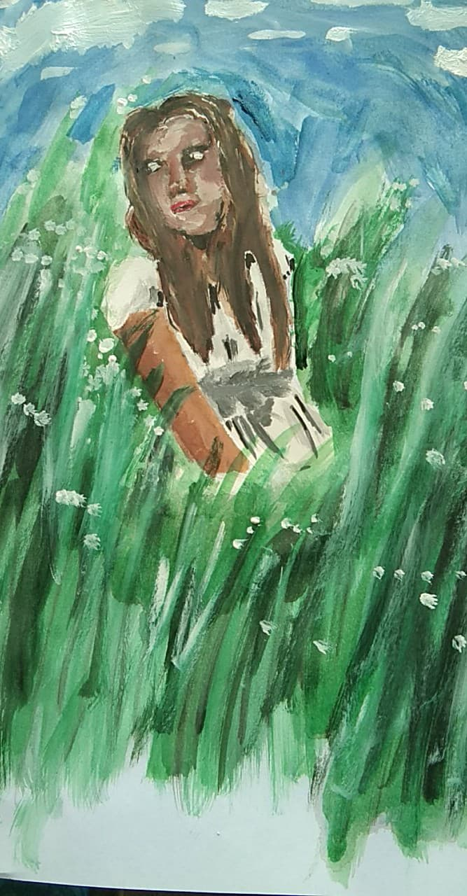

Here are our artworks that we have created. These artworks have their meaning behind it. We have created this kind of artwork because we want
it to connect with our institution and our theme, which is Christ-Centered or Christ Centeredness. What you saw in this gallery are the artworks
that maybe, could inspire or motivate others to do something, especially at this time. We also want to make you aware of the community that I and
groupmates are helping our artworks are dedicated to our partner institution.
Title: Love
Artist: Danielle Huetira
Material: Sketch paper, paint, pencil, marker
Description: This artwork represents how we care for the people right now.
We helped together as one to fight this pandemic, and together we pray as one.
Title: Together
Artist: Danielle Huetira
Material: Sketch paper, marker, pencil, paint
Description: This artwork represents how families nowadays pray together as one.
They put first Jesus than always using their gadgets and can't spend time with each other anymore.
Title : Smile
Artist : Harvey Jay F. Dagatan
Materials : Paper, Eraser, Pencil.
Description : A child smiling while experiencing poverty.
Title: Little Hope
Artist: Danielle Huetira
Material: Sketch pad, pencil, marker, paint, paintbrush
Description: This artwork represents a little hope inside us, even if we wanted
to give up on the things that we do, but still, this little hope is in us.
Title: Holy
Artist: Danielle Huetira
Material: Sketch paper, paint, paintbrush
Description: This artwork represents how each child nowadays does since, for them, it's the only way for
them to help those who are suffering right now that they may have a strength to fight right now ad to be always safe.

Title : The Girl In Grassland
Artist : Harvey Jay Dagatan
Materials : paint, paper, paintbrush, tissue.
Description : This girl is playing in the grass fields and make up with her time.
Title : Fear
Artist : Harvey Dagatan
Materials : tissue, paint, stick
Description : This is the representation of fear. like most people they have a fear of bugs esspecially spiders.
Title :Lovers in the Sunset
Artist : Rommer Magcamit
Materials :paint, paintbrush, illustration board.
Description :This lovers are watching the sunset and dating.
Title : Bravery
Artist : Rommer Magcamit
Material : tissue, paint, glue, illustration board.
Description : This represents the bravery of the people in everythings
Title: Smokeu
Artist: Danielle Ann Huetira
Materials: Pencil and Oslo paper
Description:Watching as the world slowly breaks down, wherein people don't care anymore about their surroundings. People don't mind
about others, they only focus on themselves. I have created this kind of artwork since I've noticed that a lot of us right
now don't seem to care about our world anymore. Because we are all too busy focusing on our daily activities.
Title: Together
Artist: Danielle Huetira
Material: Sketch paper, marker, pencil, paint
Description: This artwork represents how families nowadays pray together as one. They put
first Jesus than always using their gadgets and can't spend time with each other anymore.
Title : Donation Incoming
Artist : Harvey Jay Dagatan
Materials : Computer, Adobe Photoshop
Description : A truck full load of donations is coming to give to those who are in need, especially in the rural area.